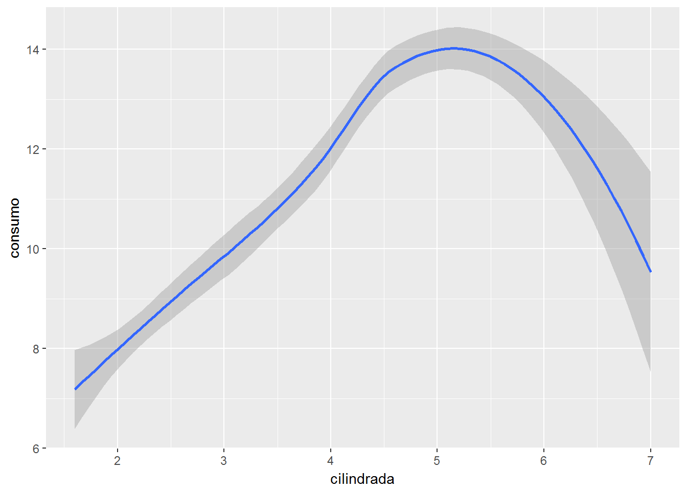

1 Gráficos básicos en el análisis de datos
Esta sección es una breve introducción a los gráficos más comunes para analizar conjuntos de datos. Para ello, utilizaremos el paquete ggplot2 (“gg” para “Grammar of Graphics”).
#install.packages("tidyverse")
library(tidyverse) #incluye ggplot2Empezaremos con la función básica qplot(“quick plot”) de este paquete. Una descripción abreviada de esta función es
qplot(x, y=NULL, data, geom="auto", xlim = c(NA, NA), ylim =c(NA, NA))-
x: valores en el eje de abscisas. -
y: valores en el de ordenadas (opcional). -
data: data.frame de donde salen los datos (opcional). -
geom: elementos gráficos o geometrías (“point”,line“,”bar“,…). Por defecto, “point” siyviene especificado, e “histogram” si sólo se especificax. -
xlim,ylim: limites en los ejes dexey.
Otros argumentos relacionados con los ejes y el titulo del gráfico son: main: titulo del gráfico; xlab, ylab: etiquetas los los ejes; log: ejes en escala log. Los valores permitidos son “x”, “y” o bien “xy”.
1.1 Distribución de una variable
Para intentar ver algo en un conjunto de datos, lo primero que se puede hacer es averiguar como se distribuyen sus valores. En R, hay funciones básicas (summary, stem, table, …) que permiten tener una idea de esta distribución.
El tipo de representación gráfica de la distribución cambia según la naturaleza de la variable en estudio. Una variable cuantitativa toma valores numéricos. Para una variable cuantitativa, se suele recurrir a un histograma o bien a un diagrama de caja para describir su distribución. Mientras que para variables cualitativas (o categóricas), se utilizará un diagrama de barras.
1.1.1 Histograma
Para ilustrar la descripción gráfica de una variable numérica, se utiliza la base de datos mpg que contiene información sobre el consumo (en millas/galón) según las características de un conjunto de modelos de coche:
mpg # ?mpg para más detalles## # A tibble: 234 x 13
## # Groups: model [38]
## manufacturer model displ year cyl trans drv cty hwy fl
## <chr> <chr> <dbl> <int> <int> <chr> <chr> <int> <int> <chr>
## 1 audi a4 1.80 1999 4 auto(l~ f 18 29 p
## 2 audi a4 1.80 1999 4 manual~ f 21 29 p
## 3 audi a4 2.00 2008 4 manual~ f 20 31 p
## 4 audi a4 2.00 2008 4 auto(a~ f 21 30 p
## 5 audi a4 2.80 1999 6 auto(l~ f 16 26 p
## 6 audi a4 2.80 1999 6 manual~ f 18 26 p
## 7 audi a4 3.10 2008 6 auto(a~ f 18 27 p
## 8 audi a4 quat~ 1.80 1999 4 manual~ 4 18 26 p
## 9 audi a4 quat~ 1.80 1999 4 auto(l~ 4 16 25 p
## 10 audi a4 quat~ 2.00 2008 4 manual~ 4 20 28 p
## # ... with 224 more rows, and 3 more variables: class <chr>,
## # consumo <dbl>, media <dbl>mpg <- mpg %>% mutate(consumo=235/hwy) # conversión litros/100 km = 235/mpg
summary(mpg$consumo) #consumo en autopista (en litros/100km)## Min. 1st Qu. Median Mean 3rd Qu. Max.
## 5.341 8.704 9.792 10.724 13.056 19.583stem(mpg$consumo)##
## The decimal point is at the |
##
## 5 | 337
## 6 | 455779
## 7 | 11333366666668888
## 8 | 1111111111111111111111444444477777777777777
## 9 | 000000000000000000000000000000004444444444444448888888888888
## 10 | 22222227777777
## 11 | 2288888888888
## 12 | 4444444444444
## 13 | 11111111118888888888888888888888888888888
## 14 | 7777777
## 15 | 7777777777
## 16 | 88
## 17 |
## 18 |
## 19 | 66666qplot(consumo,data=mpg) #histograma La altura de cada barra en el histograma es proporcional a la frecuencia de datos que caen en el intervalo correspondiente. Por defecto, en la función qplotel número de barras es igual a bins=30. Este valor es muy arbitrario. Otra alternativa consiste en elegir un número \(k\) de barras en función del tamaña muestral \(n\), como por ejemplo, el criterio de Sturges (\(k=1+\log_2(n)\)) o el criterio de Rule (\(k=2n^{1/3}\)). Abajo, un histograma con un número de barras que sigue este ultimo criterio:
qplot(consumo,data=mpg,bins=12,color=I("blue4"),fill=I("lightblue"))
El argumento fillcontrola el color de relleno de las barras y el argumento color el color del borde. Para especificar un color concreto se utiliza la función I(). Si el color varía con otra variable z, se especifica esta dependencia escribiendo fill=z.
qplot(consumo,data=mpg,bins=12,fill=class) #distribución del consumo según tipo de coche. Poco adecuado en general.1.1.2 Diagrama de caja (boxplot)
Otra representación similar es el diagrama de caja. Este diagrama describe la distribución de una variable numérica mediante una caja y unos segmentos que acotan las regiones donde la variable tiene el grueso de sus valores. Esta representación es menos fina que la del histograma pero es más robusta (menos sensible a valores extremos).
Esta representación es especialmente adecuada cuando se quiere describir como varía la distribución de una variable numérica en función de una variable categórica. Así, la distribución del consumo en consumo según el tipo de coche se puede representar de la siguiente manera:
qplot(class,consumo,data=mpg,geom="boxplot")
Representar la distribución de la altura de los alumnos de la universidad de Adelaide y su variación con el sexo, a partir de la base de datos survey del paquete MASS.
require(MASS)
?survey
survey <- as.tibble(survey) %>% filter(!is.na(Sex)) #quitamos el alumno sin información sobre su sexo1.1.3 Diagrama de barras
Los diagramas de barras permiten representar la distribución de una variable categórica. En esta representación, cada categoría viene representada por una barra cuya altura es proporcional a su frecuencia en la base de datos.
qplot(class,data=mpg,fill=I("lightblue")) #Distribución de los tipos de coche en la base mpg
qplot(class,data=mpg,fill=drv,color=I("gray60")) #Distribución de los tipos de coche según tracciónUtilizando el argumento fill se puede ver como varia esta distribución de acuerdo a otra variable (aquí el tipo de tracción del coche). El gráfico obtenido resulta poco claro y veremos más adelante como mejorarlo.
Representar la distribución de los hábitos con el tabaco según el sexo, en la muestra de alumnos de la universidad de Adelaide. Averiguar cual podría ser la mejor representación (¡hay tantos chicos como chicas!).
1.2 Relación entre dos variables
1.2.1 Diagrama de dispersión
Para describir la relación entre dos variables cuantitativas se suele utilizar gráficos de dispersión. Estos gráficos describen esta relación mediante una nube de puntos en un plano cartesiano. Cada punto de la nube corresponde a una fila de la base de datos y cada una de las variables corresponde a un eje. En el gráfico siguiente se describe la relación entre el consumo en autopista y la potencia (cilindradas) del coche:
qplot(displ,consumo,data=mpg,xlab="cilindrada")####### Para subsanar problemas de solapamiento de puntos
#qplot(displ,consumo,data=mpg, alpha=I(.1))
#qplot(displ,consumo,data=mpg, alpha=I(.25), geom="jitter") #Mejor resultado añadiendo algo de ruidoAjustando una curva suave (“smooth”) a la nube de puntos, se puede apreciar mejor la tendencia en esta relación:
qplot(displ,consumo,data=mpg,geom="smooth",xlab="cilindrada")
#qplot(ciudad,consumo,data=mpg,geom="smooth", method="lm") ## para ajutar una recta; "lm": linear model
Utilizando los base de datos survey, describir la relación entre la altura del alumno y la distancia entre sus dedos (pulgar y auricular) de la mano usada para escribir. En un mismo gráfico, describir como esta relación cambia con el sexo.
1.2.2 Dotchart
Si una de las variables es categórica, el gráfico de dispersión puede ser también apropiado.
qplot(consumo,model,data=mpg,col=cyl)Pero, es recomendable para mayor claridad ordenar la variable categórica de acuerdo a la otra variable:
mpg <- mpg %>% group_by(model) %>% mutate(media=mean(consumo))
qplot(consumo,reorder(model,media),data=mpg,col=cyl,xlab="modelo de coche")
Describir con un gráfico similar al anterior, los datos de la base de datos islands sobre superficies de islas. Puede ser oportuno recurrir a una escala log.